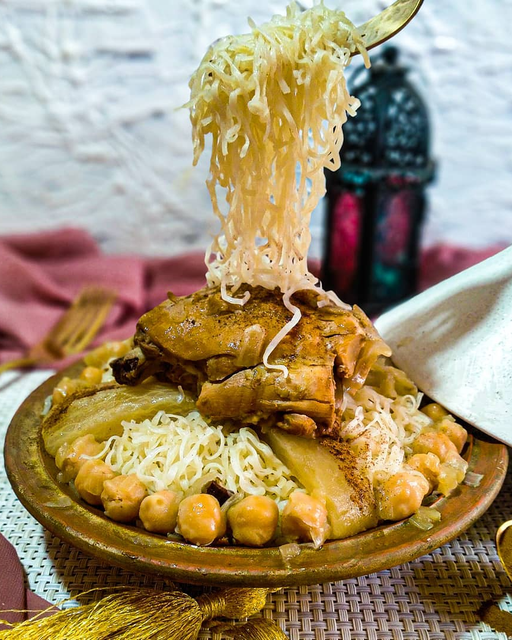

Rechta
Rechta is a dish made from pasta(flat noodles) cut into thin fresh artisan strips,
typical of. It is in particular the symbolic dish of Algiers cuisine.

Ingredients
- 3/4 cup fine semolina
- 1/4 cup all purpose flour
- 1/4 tsp salt
- 1/2 water (more or less)
- olive oil
Steps:
- In a large bowl, mix semolina, flour and salt.
- Sprinkle water over the semolina mixture, little by little.
- Mix everything with your hand and stop adding water once the dough gets together. No need to knead the dough.
- Cover the dough with plastic wrap and let rest on the counter for about 30 minutes.
- Divide the dough into 3 pieces. You can do this step before letting the dough rest.
- Dust your working board with flour and roll out each piece of dough into thin long strip or sheet, using a rolling pin (you may need to cut the long strip into half to make the work easy).
- Pass each pasta sheet (slightly dusted with flour) in the pasta machine to get a thin sheet. You should set up your machine to the thickness close to that of your pasta sheets, then end up with the lowest setting to get the thinest sheet.
- Place your thinnest sheets on a clean kitchen towel and let them dry for about 15 to 20 minutes.
- Pass each pasta sheet in the part of the machine that makes thin noodles.
- Place a plate underneath to catch the noodles or the Rechta.
- Once you make about a plate of Rechta, start to steam it. Place the Rechta in the top of a steamer( the top of the steamer should be oiled with olive oil to avoid stickiness).
- Steam for about 5 minutes or less.
- Work on the other pasta sheets and make more Rechta.
- Steam the Rechta in small batches.
- Dump the steamed Rechta in a large shallow dish.
- Drizzle with about 1 tbsp olive oil and start separating the noodles with hands. You may not need to add olive oil for the second batch of Rechta.
- Once all the Rechta or noodles are separated, let cool then store in ziploc bags.
- Place the bags in the freezer for later use.